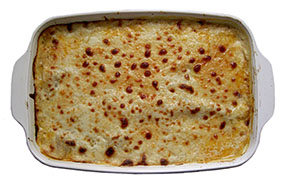

Black Bean Lasagna
Ingredients

- 2 16-oz. cans black beans, rinsed, drained and slightly mashed
- 1 cup salsa
- 2 cups low-fat meatless spaghetti sauce
- 1 tsp. bottled minced garlic
- 1 tsp. cumin
- 15 oz. container low-fat ricotta cheese
- 1/3 cup grated or shredded parmesan or romano cheese
- 1/4 cup skim milk
- 9 cooked lasagna noodles
- 1 cup shredded low-fat Monterey Jack cheese
- 1 cup shredded part-skim mozzarella cheese
Directions
- Preheat oven to 350 degrees.
- In a large bowl, stir together beans, salsa, spaghetti sauce, garlic and cumin. Set aside.
- In a medium bowl, stir together ricotta, parmesan and milk.
- Spray a 13 x 9 x 2 inch baking pan or glass baking dish with vegetable oil spray.
- To assemble lasagna:
- Place three lasagna noodles on bottom of dish.
- Spread 1/3 of bean mixture on the noodles in the dish, making sure that the mixture covers the noodles completely.
- Then spread 1/3 of the cheese mixture over that.
- Sprinkle with 1/3 of the Monterey Jack cheese and 1/3 of the mozzarella cheese.
- Repeat procedure twice so that you have three layers.
- Cover dish tightly with foil and bake 30 minutes.
- Uncover and bake 10 minutes more or until lasagna is heated through.
- Let stand 5 minutes before serving.
Link to external stylesheet